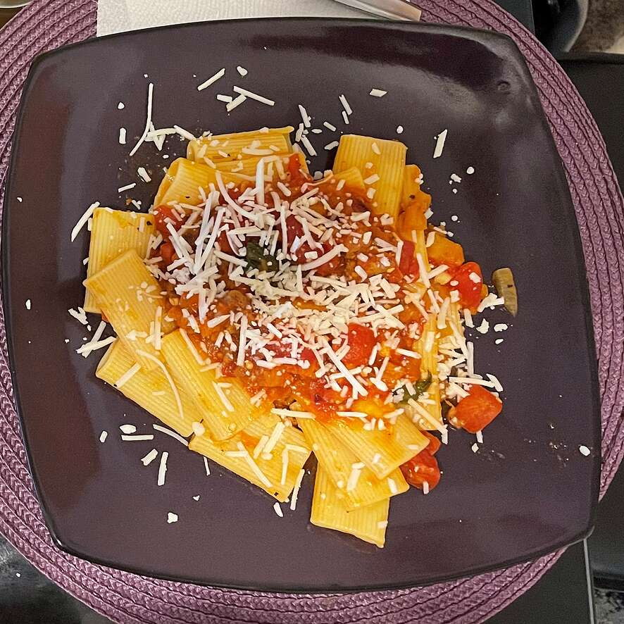

Eggplant Pasta

This is a homemade eggplant pasta.
This is a simple pasta recipe. It takes 55 mins to be done(prep time:15 mins cook time:40 mins). It can serve upto 8 people
Ingridents
- ¼ cup olive oil
- 2 cloves garlic, minced
- 1 eggplant, peeled and cut into 1/2-inch cubes
- 1 (28 ounce) can plum tomatoes with juice, chopped
- 1 (16 ounce) package rigatoni pasta
Steps
- Heat olive oil in a large skillet over medium heat; cook and stir garlic until fragrant, 1 to 2 minutes. Add eggplant; cook, stirring constantly, until eggplant is softened, about 5 minutes. Add tomatoes and juice; cook until sauce is slightly reduced, about 20 minutes.
- Bring a large pot of lightly salted water to a boil. Cook rigatoni in the boiling water, stirring occasionally until cooked through but firm to the bite, about 13 minutes. Drain and transfer to a serving bowl.
- Pour sauce over pasta.